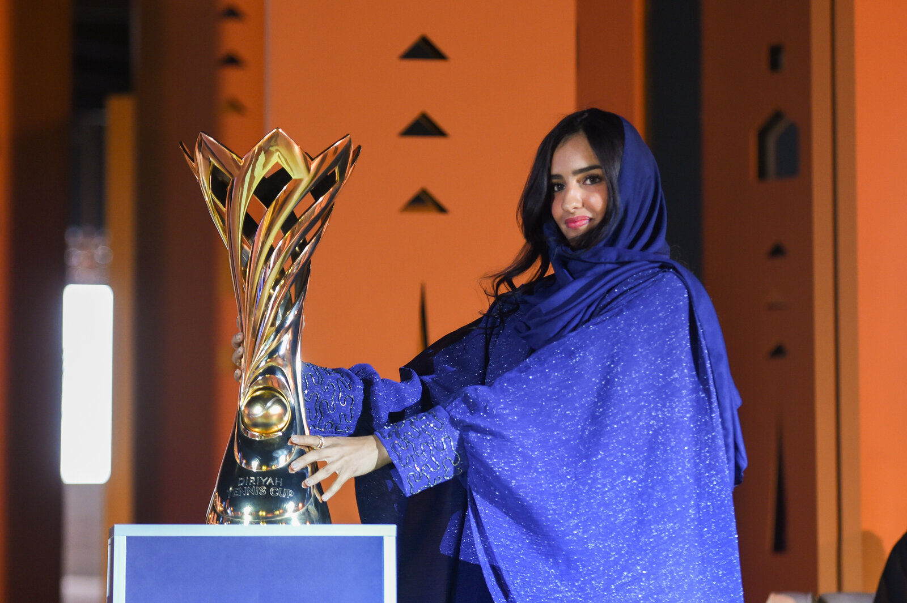
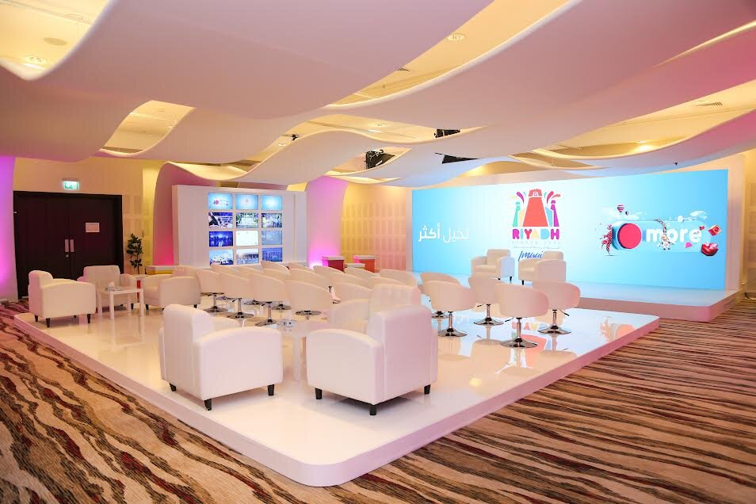

٢٠٢٢ · موسم الدرعية · الافتتاح2022 · DIRIYAH SEASON · OPENING
الإطارُ الرسميُّ للموسم في نسخته الافتتاحية. أدرتُ اتصاله من اليوم الأول.The official frame for the inaugural Season. I led its communications from day one.
حين يكونُ الحدثُ وطنيًا، يصبحُ الاتصالُ هو الفرقَ بين الذكرى والصمت. هنا، عشرُ سنواتٍ من إدارة هذا الفرق — في الرياضة، الترفيه، الثقافة، والحكومة. When an event is national, communications becomes the difference between memory and silence. Ten years of managing that difference — across sport, entertainment, culture, and government.
قُدتُ اتصالَ موسم الدرعية لافتتاحه. أكثرُ من أربعين فعالية رياضية وثقافية وتراثية ومجتمعية، تتراوح بين البطولات الدولية الكبرى والفعاليات الشعبية الصغيرة في حي الطريف المسجَّل في اليونسكو.I led communications for the opening of Diriyah Season. 40+ sports, cultural, heritage, and community events — from major international championships to small folkloric formats inside the UNESCO-listed At-Turaif district.
البطولات الدولية:Flagship events:
الفعاليات الثقافية:Cultural formats:
الإطارُ الرسميُّ للموسم في نسخته الافتتاحية. أدرتُ اتصاله من اليوم الأول.The official frame for the inaugural Season. I led its communications from day one.

لحظةُ رفع الكأس. أدرتُ علاقاتنا العامة المحلية للحدث.The trophy moment. I managed our domestic PR for the event.

حضورُ يارا، اللاعبة السعودية، في بطولة دولية على أرض الدرعية.Yara, the Saudi player, on home soil at an international tournament.

ميسي في الدرعية. لحظةٌ لا تُنسى، ضمنَ نطاق عمل أدرتُ علاقاتِه العامة محليًا.Messi in Diriyah. An unforgettable moment, within the scope of work I managed PR for locally.

أبطالُ الكالشيو، في حضرة الدرعية.The champions of Italian football, in the heart of Diriyah.

أوّلُ سباقٍ ليليٍّ في المملكة، تحت إضاءة LED مستدامة. قُدتُ الاتصالَ الداخليّ.The Kingdom's first night race, under sustainable LED. I led internal communications.
الفروسيةُ في ميدانها الأصليّ. اتصالٌ داخليٌّ لحدثٍ بمعايير عالمية.Equestrian sport on its home ground. Internal communications for a world-standard event.

لقطةٌ فنيّةٌ من تأهيليات أولمبياد BMX. الرياضةُ في مشهدٍ بمعنىً ثقافي.An artistic frame from the BMX Olympic Qualifier. Sport in a culturally meaningful scene.

خمسةٌ وعشرون مؤتمرًا إعلامياً. وفريقٌ يصنع المؤتمر قبل أن يبدأ.Twenty-five press conferences. And the team that builds each one before it starts.
في موسم الرياض، أنشأنا مركزًا إعلاميًا متكاملًا أُجريت من خلاله خمسةٌ وثلاثون مؤتمرًا إعلاميًا. أشرفتُ على لوجستيات البرامج، تنسيق الموردين، والعمليات الميدانية.At Riyadh Season, we built a full-service media center that delivered 35 press conferences. I oversaw programming logistics, vendor coordination, and on-site operations.
قُدتُ أيضًا تنظيمَ المؤثرين للموسم — بناء قائمة الضيوف، تنسيق الحضور، إدارة الظهور، والتعامل المباشر مع قيادة الهيئة العامة للترفيه ومعالي تركي آل الشيخ.I also led the Season's influencer programme — guest lists, attendance coordination, presence management, and direct work with the GEA leadership and H.E. Turki Al-Sheikh.

المؤتمرُ بعد المؤتمر، حتى أصبحَ النَفَسُ الإعلاميُّ للموسم منتظمًا.Conference after conference, until the Season's media rhythm became regular.
بنينا المساحة، ووظّفنا الفريق، وأدرنا التواجد.We built the space, staffed the team, and managed the presence.
رتّبتُ رحلةَ المصوّر العالميّ جيل بنسيمون داخلَ المملكة لأكثرَ من خمسين يومًا. صُغتُ معه المطبخَ السعوديّ الشعبيّ ليُصوَّر في كتابه. ومن هذا الاتفاق، وُلدت فكرة الفِلم الوثائقيّ الذي يتتبّع رحلته.I arranged the journey of world photographer Gilles Bensimon across Saudi Arabia for more than fifty days. I curated the Saudi cuisine featured in his book. From that brief, the documentary film that follows his journey was born.
بنيتُ خطّتَه ومساره، واخترتُ أطباقَه بالتنسيق مع الهيئة. ضمنتُ توافقَ رحلته مع فعالياتٍ شعبيةٍ بعناية، ليظهر الفِلم متناغمًا حول ثلاثة محاور لكلِّ منطقة: الأكل، الملبس، الفلكلور.I built his route, selected his plates with the Commission, and aligned his journey with folkloric events so the film could speak through three axes per region: food, dress, folklore.
المشروع بدأ كواحدٍ من سبعةَ عشرَ مبادرة. اقترحتُ، دمجت اثنتين في واحدة، ثم اختزلتُ كلَّ شيءٍ إلى فكرةٍ موحَّدة. خفّض التكلفة. رفع القيمة الثقافية والتجارية.The project began as one of seventeen initiatives. I proposed it, consolidated two of them into one, then reduced everything to a single unified idea. Cost down. Cultural and commercial value up.

من موقعِ تصوير الفِلم الوثائقيّ. خمسون يومًا، طبخٌ، حِرفةٌ، وأناسٌ يفتحون بيوتهم.From the documentary set. Fifty days, cooking, craft, and people opening their homes.
عملتُ على جائزة منصّة صناعي، التي حصدت جائزة CXA لأفضل تحوّلٍ رقميّ.I worked on the Sina'ee Platform Award — which won the CXA Best Digital Transformation award.
أنتجتُ المؤتمرَ الثاني لإطلاق المنصّة، وحضره أربعةُ وزراء. وقُدتُ تعديلَ وتحسينَ موقع وزارة الصناعة لتسهيل تجربة المستفيد.I produced the second launch conference for the platform, attended by four ministers. I also led the redesign of the Ministry of Industry website to streamline customer experience.
عملنا على مبادرات التوعية الخاصة بـالمنتجات السمّية ومبادرة سابر. صُغتُ الاستراتيجيةَ الكاملة، وحدّدتُ طرقَ استهداف الشركات، ورسمتُ شكلَ ظهور المبادرة في السوق.We worked on awareness initiatives for toxic products and the SABER programme. I authored the full strategy, defined how to target companies, and shaped the initiative's market presence.
قُدتُ الإعدادَ لـمؤتمر سليم ٢، أحدِ أهمِّ مؤتمرات الهيئة في حماية المستهلك السعودي.I led preparation for the second Salim Conference, one of SASO's most important gatherings on consumer protection.
في مدارس مسك، أدرتُ اتصالاتٍ مباشرةً مع مسؤولين حكوميين، وأفرادٍ من الأسرة الحاكمة، ورؤساءَ تنفيذيين لكبرى الشركات، وبنيتُ علاقاتٍ مهنيةً موثوقةً على هذا المستوى.At MISK Schools, I managed direct communications with government officials, members of the royal family, and CEOs of major companies — building trusted professional relationships at that level.
قُدتُ إطلاقَ موقع مسك الجنادرية، الذي افتتحه ملكُ المملكة العربية السعودية.I led the launch of the MISK Janadriyah site, inaugurated by H.M. the King of Saudi Arabia.

افتُتح موقعُ مسك في الدورة الثانية والثلاثين بحضور خادم الحرمين الشريفين. قُدتُ العلاقاتِ والتنظيمَ في الفريق الذي أدارَ موقعَ المدارس.MISK's pavilion at the 32nd Janadriyah was inaugurated by H.M. the King. I led relations and organization for the team that ran the Schools' pavilion.

المقابلةُ التي أجريتُها بنفسي مع جيك بول، قبل نزال "The Truth" في الدرعية.The interview I conducted myself with Jake Paul, before "The Truth" fight in Diriyah.

استقبلتُ الفريقَ في زيارته للمملكة، وأدرتُ تغطيتنا المحليّة.I greeted the team on their visit to Saudi Arabia, and managed our domestic coverage.
عملٌ بصريٌّ ومشاركةٌ في إطلاق مركز الفعاليات الوطني.Visual work and involvement in the launch of the National Event Center.